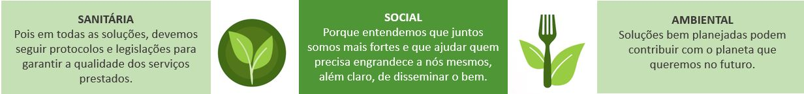

Nossa História
A Capim Limão Nutrição iniciou as atividades em 2015 com foco em nutrição escolar, e além da responsabilidade técnica, trabalhamos também nas escolas com a abordagem de educação nutricional, que tem como objetivo auxiliar na mudança de comportamento de cada indivíduo, buscando uma relação mais equilibrada com a alimentação, dando a importância que o alimento precisa ter para proporcionar benefícios físicos e emocionais.
Com o passar dos anos, além da nossa principal atividade, que sempre sentimos muito amor em realizar, tivemos oportunidades de vivenciar diferentes desafios, e hoje sabemos que o nosso objetivo é encontrar a melhor solução para nossos clientes, independente se este estabelecimento é uma instituição de ensino, comercial (açougues, mercados, padarias, etc.) ou industrial (empresas do ramo de alimentação ou outro segmento).
Entendemos a necessidade do nosso cliente e apresentamos uma solução eficaz para alcançar os resultados esperados. E para que as soluções sejam completas, apresentamos a solução com um novo olhar, considerando três pilares:
